# Save the object (after clustering, for example)
saveRDS(pbmc, file = "data/pbmc_clustered.rds")
# Load it in a new session
pbmc <- readRDS("data/pbmc_clustered.rds")Seurat workflow: PBMC
Note
Introduction to Seurat workflow
This vignette is based on Seurat - Guided clustering tutorial
Use this vignette as a general guideline, not a ground truth. There is no one way to analyze genomics data. Sometimes you have to adjust your analysis based on your research question, experimental design etc.
In the future you will analyze genomic data that you or other people generated. It is vital that, before any analysis, you familiarize yourself with the data set:
What is the biological question you are trying to answer? What are the hypotheses?
What is the study design and how was the experiment done (sample type, treatment, genetic knockout, disease, sample size, system, technology, are there any batches etc.)?
How was the data processed (software, genome version etc.)?
What type of data are available (raw data, count matrices, sample/cell metadata)?
Instead of just copy-pasting the code, try implementing the following logic:
- Read the vignette first. Try to understand each step.
- Without looking at the vignette, write down the main steps of the workflow (use headers to build an outline of your document at the same time). For each step, write a short comment: What is this step for?, Why is it important? Compare your answers with the vignette. It is ok if you don’t remember the exact code or the name of the functions. It’s more important that you understand each step conceptually.
- After each step write down your observations. What has changed?
- At the end of your analysis, think about and write down conclusions. It doesn’t have to be an academic assay but try to state the main points and do a little bit of goggling.
- Are you able to answer the initial research question and confirm/deny the hypotheses?
- Try to connect what is known with what you have found.
The goal of this training is to help you understand the general workflow of single-cell RNA-seq analysis. Although using AI can be beneficial and speed up your analysis, it is important that you have a good understanding of topics covered in this training and you have truly mastered the skill. Only then you can use AI to help you with the analysis. It is fine, to ask AI to help you with customizing a ggplot, but try not to use it for the actual analysis.
If you don’t know what a function does, run ?function_name in Console.
About the dataset
For this tutorial, we will be analyzing a dataset of Peripheral Blood Mononuclear Cells (PBMC) freely available from 10X Genomics. There are 2,700 single cells that were sequenced on the Illumina NextSeq 500. The raw data can be found here.
PBMCs are blood cells with a round nucleus: mostly T cells, plus B cells, NK cells and monocytes (and a small number of dendritic cells and platelets). They are easy to collect from a blood draw, which makes them a popular sample for benchmarking and for learning single-cell RNA-seq. This dataset (“PBMC 3k”) comes from a single healthy human donor and was generated with the 10X Genomics Chromium platform. The data were processed with cellranger and aligned to the human reference genome (hg19). Because there is only one sample, there are no treatment groups or batches to compare. Our goal is to identify the cell types present in the sample, based on clustering and marker gene expression.
The data can be also found on my github
Structure of the cellranger output
The downloaded archive contains a folder (filtered_gene_bc_matrices/hg19/) with three files. Together they describe one count matrix, split into the matrix itself and the labels for its rows and columns:
barcodes.tsv: one cell barcode per line (e.g.AAACATACAACCAC-1). Each barcode is a short DNA sequence that tags all reads from one droplet, so it identifies one cell. The suffix-1is the GEM well (sample) number. These are the columns of the matrix (2,700 lines here). Only barcodes that cellranger called as cells are included, empty droplets are removed (“filtered” matrix).genes.tsv: one gene per line, with two tab-separated columns: the Ensembl gene ID (e.g.ENSG00000243485) and the gene symbol (e.g.MIR1302-10). These are the rows of the matrix, one for every gene in the reference annotation (32,738 for hg19), whether or not it was detected. In newer cellranger versions this file is calledfeatures.tsv.gzand has a third column giving the feature type (e.g.Gene Expression).matrix.mtx: the UMI counts, stored in the sparse format. Most entries in a single-cell matrix are zero (a cell expresses only a fraction of all genes), so only non-zero values are stored. After the header lines, there is a line with the total number of rows, columns and non-zero entries, followed by one line per non-zero entry with three numbers:gene_index cell_index count. The indices point to the line numbers ingenes.tsvandbarcodes.tsv. For example,1234 5 3means that the gene on line 1234 ofgenes.tsvhas 3 UMIs in the cell on line 5 ofbarcodes.tsv.
Read10X() reads these three files and combines them into a single sparse matrix (a dgCMatrix) with genes as row names and barcodes as column names. That format is very similar to bulk RNA-seq data, where rows represent genes and columns represent samples. In single-cell we have cells/barcodes instead of samples.
What is a UMI?
A UMI (Unique Molecular Identifier) is a short random DNA sequence added to each individual mRNA molecule during reverse transcription, before the cDNA is amplified by PCR. Amplification produces many copies of the same molecule, so counting reads would overestimate highly amplified molecules. Reads from the same cell and gene that carry the same UMI are copies of one original molecule, so they are collapsed and counted once. This is why the values in the matrix are the number of mRNA molecules detected, not the number of reads.
How is this different from bulk RNA-seq?
Bulk RNA-seq measures RNA from thousands to millions of cells pooled together, so each gene has one value per sample: an average over all cells. Single-cell RNA-seq keeps the cells separate, so each gene has one value per cell. This lets us find cell types and states that would be hidden in the average, for example in PBMCs, where T cells, B cells and monocytes are mixed together.
The data look different too, and this affects the analysis:
- Size: a bulk experiment has a handful of samples (columns), a single-cell experiment has thousands of cells.
- Sparsity: each cell contains very little RNA (a few pg) and only a fraction of it is captured, so most entries in the matrix are zero. Some zeros are true absence of expression, others are “dropouts” where a molecule was missed. Bulk data have far fewer zeros.
- Counts: in bulk RNA-seq, reads are usually counted directly (full-length protocols, no UMIs). Because single-cell protocols need a lot of PCR amplification from tiny amounts of RNA, UMIs are used to remove amplification bias.
- Noise: gene expression is noisy at the single-cell level (both biological and technical), so we need cell-level quality control (e.g. number of genes, mitochondrial content) and dimensionality reduction before clustering.
- Question: bulk RNA-seq compares conditions (differential expression between samples), single-cell RNA-seq is often used (but not only) to discover and annotate cell populations.
Saving your work
Some steps in this workflow (normalization, PCA, clustering, UMAP) take time, and the results can change slightly if you rerun them with a different seed or settings. After an important step, save the Seurat object to disk with saveRDS(), and load it later with readRDS(), so you don’t have to rerun everything.
Tips:
- The
.rdsfile stores one R object with everything in it: counts, normalized data, metadata, PCA, UMAP and clusters. - Save versions at different steps (e.g.
pbmc_qc.rds,pbmc_clustered.rds,pbmc_annotated.rds) instead of overwriting one file, so you can go back to an earlier step. - Seurat objects can be large, so don’t commit them to git (add them to
.gitignore) and avoid storing them in synced folders if you can. - The object is tied to the Seurat version it was created with, so note the version (
packageVersion("Seurat")) and, if needed, update the object withUpdateSeuratObject()after loading it in a newer one. saveRDS()saves one object. To save several objects, usesave()andload(), or save them in a list.
Libraries
# Install these packages if you haven't already
# install.packages("Seurat")
# devtools::install_github("immunogenomics/presto")library(tidyverse)
library(patchwork)
library(Seurat)
library(clustree)Seurat object
Set up Seurat object
We start by reading in the data. The Read10X() function reads in the output of the cellranger pipeline from 10X, returning a unique molecular identified (UMI) count matrix. The values in this matrix represent the number of molecules for each feature (i.e. gene; row) that are detected in each cell (column).
pbmc_data <- Read10X("data/pbmc/filtered_gene_bc_matrices/hg19/")
# Create a seurat object
pbmc <- CreateSeuratObject(counts = pbmc_data, project = 'pbmc', min.cells = 10, min.features = 0)Warning: Feature names cannot have underscores ('_'), replacing with dashes
('-')min.cells: Include features detected in at least this many cells. We can already set up small cutoffs to filter out cells or genes. This is an arbitrary threshold that should be used carefully and customized depending on the dataset. min.cells = 10 is reasonable for this dataset, and it’s a common choice. With 2,700 cells, 10 cells is about 0.4% of the data. Genes seen in fewer cells than that are mostly noise and add little to clustering. The cost is rare populations. If a cell type makes up less than about 0.4% of the cells (roughly 10 cells here), a marker gene specific to it could be filtered out. If you are unsure what to do, or expect to identify rare cell types, it’s better to not set any thresholds.
min.features: Include cells where at least this many features are detected. It’s better to leave it at 0, because we will perform a separate QC and cell filtering.
Seurat object structure
pbmcAn object of class Seurat
11139 features across 2700 samples within 1 assay
Active assay: RNA (11139 features, 0 variable features)
1 layer present: countsThe printed summary tells us that the object has 2,700 cells (called “samples” here), a number of genes (features) that passed min.cells, and one assay called RNA. The object has no variable features yet and only one layer (counts), because we haven’t done any analysis.
A Seurat object is an S4 object, a container with several slots. Each slot stores a different piece of the analysis, so everything about one dataset stays together and in sync. You can list the slots with slotNames().
slotNames(pbmc) [1] "assays" "meta.data" "active.assay" "active.ident" "graphs"
[6] "neighbors" "reductions" "images" "project.name" "misc"
[11] "version" "commands" "tools" The most important ones are:
assays: the expression data (counts, normalized data, scaled data).meta.data: a data frame with one row per cell, for cell-level information.active.ident: the cell identity (cluster or cell type) used by default for plotting and DE.reductions: dimensionality reductions (PCA, UMAP).graphsandneighbors: the nearest-neighbor graphs used for clustering.commands: a log of the Seurat functions that were run on the object and their parameters.
Right now reductions and graphs are empty. They will be filled in as we go.
Assays and layers
An assay holds the expression matrices for one type of measurement. Our data have a single assay, RNA, but one object can have more (e.g. ADT for surface proteins, or SCT after SCTransform). DefaultAssay() tells us which assay is used when we don’t specify one.
Assays(pbmc)[1] "RNA"DefaultAssay(pbmc)[1] "RNA"In Seurat v5, each assay stores its matrices in layers. At the moment there is just counts, the raw UMI counts. After normalization and scaling we will also get data (log-normalized values) and scale.data (scaled values used for PCA).
Layers(pbmc)[1] "counts"Let’s look at the counts layer. It is the sparse matrix we read in with Read10X() (genes in rows, cells in columns), filtered by min.cells. The dots are zeros.
pbmc[["RNA"]]$counts[1:5, 1:3]5 x 3 sparse Matrix of class "dgCMatrix"
AAACATACAACCAC-1 AAACATTGAGCTAC-1 AAACATTGATCAGC-1
LINC00115 . . .
NOC2L . . .
HES4 . . .
ISG15 . . 1
C1orf159 . . .Cell metadata
meta.data has one row per cell (the row names are the barcodes). Seurat adds a few columns automatically:
orig.ident: the sample name (theprojectwe set).nCount_RNA: the number of UMIs in the cell.nFeature_RNA: the number of genes detected in the cell.
The concept of meta.data in single-cell is the same as in bulk RNA-seq and DESeq2 workflow. Instead of biological samples, the row represents cells/barcodes.
head(pbmc@meta.data) orig.ident nCount_RNA nFeature_RNA
AAACATACAACCAC-1 pbmc 2418 778
AAACATTGAGCTAC-1 pbmc 4896 1346
AAACATTGATCAGC-1 pbmc 3144 1126
AAACCGTGCTTCCG-1 pbmc 2632 953
AAACCGTGTATGCG-1 pbmc 979 520
AAACGCACTGGTAC-1 pbmc 2154 779# or
# head(pbmc[[]])We will add more columns here later, such as the percentage of mitochondrial genes and the cluster. Metadata columns can be accessed with $, e.g. pbmc$nCount_RNA. If we have more samples, conditions or batches, this is where we store that information.
Identities
Every cell also has an identity. By default it is the orig.ident, and later it will be the cluster.
head(Idents(pbmc))AAACATACAACCAC-1 AAACATTGAGCTAC-1 AAACATTGATCAGC-1 AAACCGTGCTTCCG-1
pbmc pbmc pbmc pbmc
AAACCGTGTATGCG-1 AAACGCACTGGTAC-1
pbmc pbmc
Levels: pbmcUseful accessors
Prefer these functions to digging into slots with @, because they work across Seurat versions.
dim(pbmc) # genes x cells[1] 11139 2700head(rownames(pbmc)) # gene names[1] "LINC00115" "NOC2L" "HES4" "ISG15" "C1orf159" "TNFRSF18" head(colnames(pbmc)) # cell barcodes[1] "AAACATACAACCAC-1" "AAACATTGAGCTAC-1" "AAACATTGATCAGC-1" "AAACCGTGCTTCCG-1"
[5] "AAACCGTGTATGCG-1" "AAACGCACTGGTAC-1"| What | How |
|---|---|
| Counts matrix | pbmc[["RNA"]]$counts |
| One metadata column | pbmc$nCount_RNA |
| All metadata | pbmc@meta.data or pbmc[[]] |
| Cell identities | Idents(pbmc) |
| Assays / layers | Assays(pbmc), Layers(pbmc) |
| Reductions | Reductions(pbmc) |
| Subset the object | subset(pbmc, subset = nCount_RNA > 500) |
As we run the workflow, come back to the object and check what has changed.
Initial processing
QC and selecting cells for further analysis
Similarly to the DESeq2 workflow - where we also did some QC’s, e.g. remove low-count genes - we will do something similar. Instead of filtering “low quality genes”, we will remove “low quality cells”. Low-quality cells (dying or damaged cells, empty droplets, doublets) have unreliable or misleading expression profiles, so if you leave them in, they add noise, form artificial clusters, and distort normalization and downstream results like clustering and differential expression.
Here are some of the commonly used metrics for QC checks:
The number of unique genes detected in each cell.
Low-quality cells or empty droplets will often have very few genes
Cell doublets or multiplets may exhibit an aberrantly high gene count
Similarly, the total number of molecules detected within a cell (correlates strongly with unique genes)
The percentage of reads that map to the mitochondrial genome
Low-quality / dying cells often exhibit extensive mitochondrial contamination
We calculate mitochondrial QC metrics with the
PercentageFeatureSet()function, which calculates the percentage of counts originating from a set of featuresWe use the set of all genes starting with
MT-as a set of mitochondrial genes (mt-in mouse)
The number of unique genes (nFeature_RNA) in each cell and total number of UMI (nCount_RNA) in each cell are already present in the meta.data
head(pbmc[[]]) orig.ident nCount_RNA nFeature_RNA
AAACATACAACCAC-1 pbmc 2418 778
AAACATTGAGCTAC-1 pbmc 4896 1346
AAACATTGATCAGC-1 pbmc 3144 1126
AAACCGTGCTTCCG-1 pbmc 2632 953
AAACCGTGTATGCG-1 pbmc 979 520
AAACGCACTGGTAC-1 pbmc 2154 779We have to calculate the percentage of mitochondrial genes in each cell. That kind of information belongs to meta.data, so we will append this information as a new column.
pbmc$percent.mt <- PercentageFeatureSet(pbmc, pattern = "^MT-") # MT- for human, mt- for mousehead(pbmc[[]]) orig.ident nCount_RNA nFeature_RNA percent.mt
AAACATACAACCAC-1 pbmc 2418 778 3.0190240
AAACATTGAGCTAC-1 pbmc 4896 1346 3.7990196
AAACATTGATCAGC-1 pbmc 3144 1126 0.8905852
AAACCGTGCTTCCG-1 pbmc 2632 953 1.7477204
AAACCGTGTATGCG-1 pbmc 979 520 1.2257406
AAACGCACTGGTAC-1 pbmc 2154 779 1.6713092There is now a new column in metadata, describing a percentage of mitochondrial genes in each cell.
Visualizing these metrics will help us determine, what thresholds to use for filtering. Seurat has plenty of built-in plotting functions.
VlnPlot(pbmc, features = c('nCount_RNA', 'nFeature_RNA', 'percent.mt'))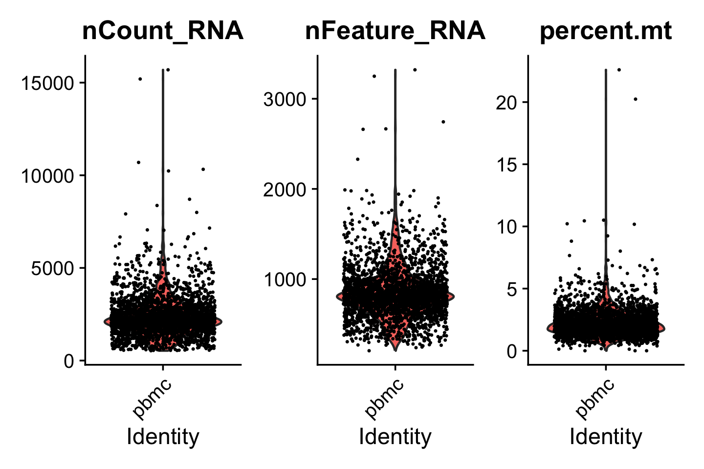
VlnPlot(pbmc, features = c('nCount_RNA', 'nFeature_RNA', 'percent.mt'), pt.size = 0)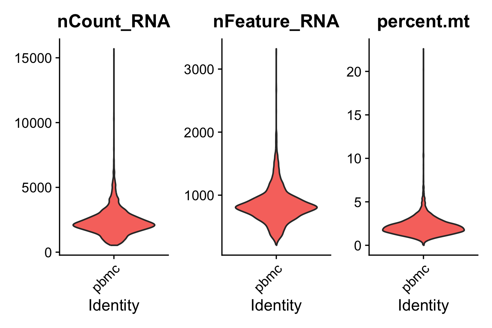
plot1 <- FeatureScatter(pbmc, feature1 = "nCount_RNA", feature2 = "percent.mt")
plot2 <- FeatureScatter(pbmc, feature1 = "nCount_RNA", feature2 = "nFeature_RNA")
plot1 + plot2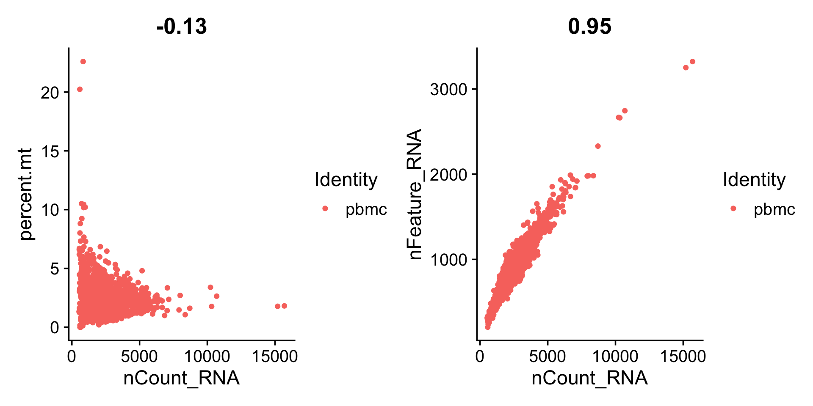
Rule of thumb for setting the cutoffs
There are no universal thresholds. Use the violin plots to see where the bulk of the cells is and where the tails are, then cut off only the clear outliers.
Look at the shape of each distribution. Most cells form one main “body”. Cells in a long tail, or in a separate small bump far from the body, are candidates for removal. Place the cutoff in the valley between the body and the tail, not inside the body.
Be conservative. It is easier to remove more cells later than to get back cells you have already filtered out. Filter, run the pipeline, and check whether the cells you removed or kept make sense.
Look at the metrics together, not one at a time. For example,
FeatureScatter()ofnCount_RNAvsnFeature_RNAorpercent.mtshows whether cells with a high mitochondrial percentage also have low counts (low quality), or whether some cells have many counts and many genes (possible doublets).Thresholds should be set per sample, because different samples and batches can have different distributions.
Write down the cutoffs you chose and why, and report how many cells were removed.
# Example (adjust the values based on your plots)
umi_lo <- 700
umi_hi <- 7000
ngenes_lo <- 250
ngenes_hi <- 2000
mito_lo <- 5Before we remove any cells, let’s add a new column to the metadata that says which cells have passed the filtering criteria
pbmc$QC_pass <- pbmc$nCount_RNA > umi_lo & pbmc$nCount_RNA < umi_hi &
pbmc$nFeature_RNA > ngenes_lo & pbmc$nFeature_RNA < ngenes_hi &
pbmc$percent.mt < mito_loQC_pass is TRUE for cells that pass all the criteria and FALSE for cells that fail at least one. Let’s see how many cells would be removed.
table(pbmc$QC_pass)
FALSE TRUE
104 2596 I am going to write my own ggplot because I want more flexibility
qc_colors <- c("TRUE" = "grey70", "FALSE" = "red")
thresholds <- tibble(
metric = c("nCount_RNA", "nCount_RNA", "nFeature_RNA", "nFeature_RNA", "percent.mt"),
value = c(umi_lo, umi_hi, ngenes_lo, ngenes_hi, mito_lo)
)
p1 <- pbmc[[]] %>%
select(QC_pass, nCount_RNA, nFeature_RNA, percent.mt) %>%
pivot_longer(-QC_pass, names_to = "metric", values_to = "value") %>%
arrange(QC_pass) %>% # FALSE cells are drawn last, on top
ggplot(aes(x = "", y = value)) +
geom_violin(fill = "grey95", color = "grey40") +
geom_jitter(aes(color = QC_pass), width = 0.3, size = 0.3, alpha = .5) +
geom_hline(data = thresholds, aes(yintercept = value), linetype = "dashed") +
scale_color_manual(values = qc_colors) +
facet_wrap(~ metric, scales = "free_y") +
labs(x = NULL) +
theme_bw()
p2 <- FeatureScatter(pbmc, feature1 = "nCount_RNA", feature2 = "percent.mt", group.by = 'QC_pass', pt.size = .2) + scale_color_manual(values = qc_colors)
p3 <- FeatureScatter(pbmc, feature1 = "nCount_RNA", feature2 = "nFeature_RNA", group.by = 'QC_pass', pt.size = .2) + scale_color_manual(values = qc_colors)
(p1 + (p2 + p3)) + plot_layout(nrow = 2)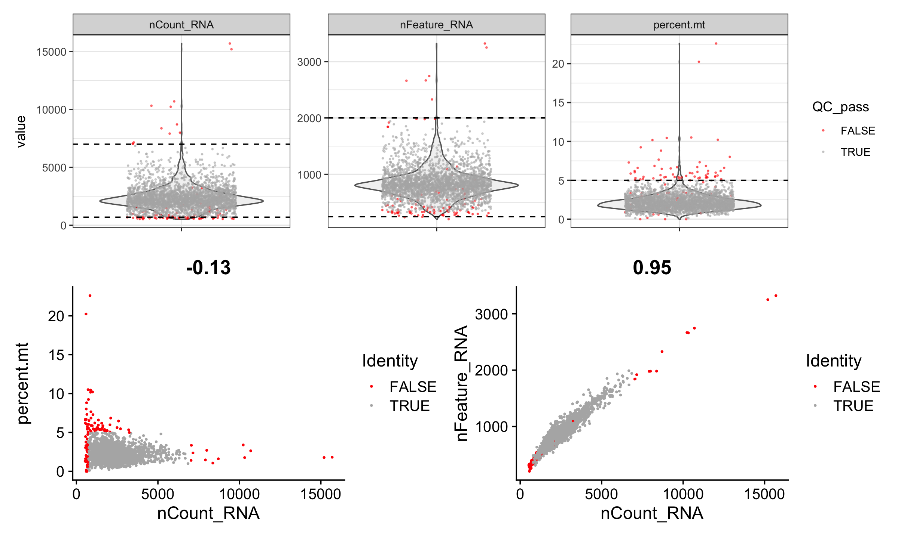
Once we are satisfied with our cutoffs, we can remove these low-quality cells. Remember that single-cell analysis is an iterative process and often times you need to go back to previous steps and adjust some parameters.
pbmcAn object of class Seurat
11139 features across 2700 samples within 1 assay
Active assay: RNA (11139 features, 0 variable features)
1 layer present: countspbmc <- subset(pbmc, subset = QC_pass) # keeps cells where QC_pass == TRUE
# This is equivalent to: pbmc <- subset(pbmc, subset = QC_pass==TRUE)Always double check that what you removed worked properly
pbmcAn object of class Seurat
11139 features across 2596 samples within 1 assay
Active assay: RNA (11139 features, 0 variable features)
1 layer present: countstable(pbmc$QC_pass)
TRUE
2596 We successfully removed low quality cells (104) and we are left with 2596 cells.
Data normalization
Cells differ in how many UMIs we detect, even if they have the same amount of RNA, because of differences in capture efficiency and sequencing depth. If we compared raw counts, a cell with more UMIs would look like it expresses everything more highly. Normalization removes this technical difference so that cells can be compared.
By default, Seurat uses NormalizeData() with the LogNormalize method:
- Divide the counts of each gene in a cell by the total counts of that cell.
- Multiply by a scale factor (10,000 by default).
- Add 1 and take the natural log (
log1p).
The result is stored in the data layer, and the raw counts stay untouched in the counts layer. The log transform reduces the influence of very highly expressed genes, and makes the data closer to what PCA and clustering work best with.
How is it different from DESeq2?
What is normalized: in DESeq2 the unit is a sample (a bulk library), and in Seurat it is a single cell. Seurat computes one size factor per cell (the total UMI count).
Size factors: DESeq2 uses the median-of-ratios method. It assumes that most genes are not differentially expressed, and it uses a geometric mean per gene across samples. This breaks down for single-cell data, because most genes have zero counts in at least one cell, which makes the geometric mean zero. Simple library-size scaling works better for sparse data.
Purpose: DESeq2 normalization is designed for comparing conditions between samples. Seurat normalization is mostly designed for comparing cells, in order to find structure (clusters) in the data.
There are other approaches, for example SCTransform(), which models counts with regularized negative binomial regression and replaces NormalizeData(), FindVariableFeatures() and ScaleData().
pbmcAn object of class Seurat
11139 features across 2596 samples within 1 assay
Active assay: RNA (11139 features, 0 variable features)
1 layer present: countspbmc <- NormalizeData(pbmc)Normalizing layer: countspbmcAn object of class Seurat
11139 features across 2596 samples within 1 assay
Active assay: RNA (11139 features, 0 variable features)
2 layers present: counts, dataNotice that running normalization added a new layer data that stores normalized counts.
Feature selection
Not all of the ~11,000 genes are useful for finding cell populations. Most genes are either not expressed, or expressed at a similar level in all cells (e.g. housekeeping genes), so they mostly add noise. The genes that differ strongly between cells, called highly variable genes (HVGs), are the ones that carry the information about cell types and states.
Selecting HVGs for downstream analysis (PCA, clustering) has several advantages:
- It focuses the analysis on the biological signal, which makes the cell populations easier to separate.
- It reduces noise from lowly informative genes.
- It makes the computation faster.
Seurat’s FindVariableFeatures() uses the vst method by default. You may recognize this approach from DESeq2: before calculating PCA we used vst and selected top 10% most variable genes. By default the top 2,000 genes are selected. The number is a convention, and results are usually robust to moderate changes (e.g. 1,000-3,000).
pbmc <- FindVariableFeatures(pbmc)Finding variable features for layer countspbmcAn object of class Seurat
11139 features across 2596 samples within 1 assay
Active assay: RNA (11139 features, 2000 variable features)
2 layers present: counts, dataThe selected genes are stored in the object and can be accessed with VariableFeatures(). The statistics for all genes are in HVFInfo().
head(VariableFeatures(pbmc), 10) [1] "LYZ" "S100A9" "IGLL5" "GNLY" "FTL" "PPBP" "FTH1" "PF4"
[9] "S100A8" "FCER1A"head(HVFInfo(pbmc)) mean variance variance.expected variance.standardized
LINC00115 0.006548536 0.006508160 0.006975392 0.9330171
NOC2L 0.108628659 0.161605672 0.202672852 0.7973721
HES4 0.080893683 0.149137698 0.140138638 1.0642154
ISG15 1.212249615 7.142215978 4.046082312 1.7652177
C1orf159 0.009244992 0.009163052 0.009827424 0.9323961
TNFRSF18 0.042758089 0.060213430 0.061813685 0.9741116Let’s plot the variance against the mean expression, highlighting the variable genes (red), and label the top 10.
# Identify the 10 most highly variable genes
top10 <- head(VariableFeatures(pbmc), 10)
plot1 <- VariableFeaturePlot(pbmc)
LabelPoints(plot = plot1, points = top10, repel = TRUE)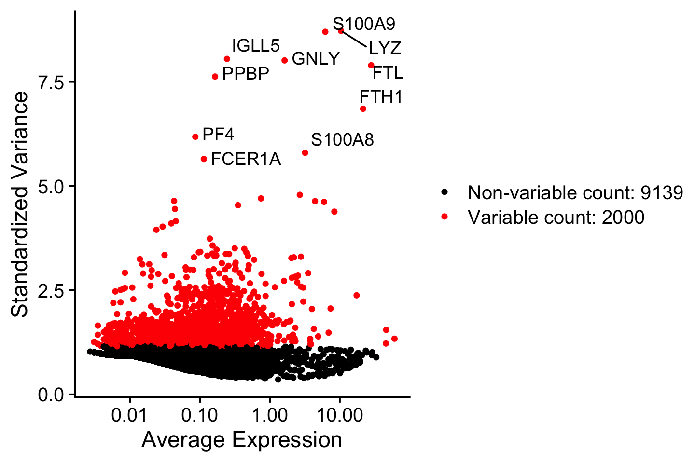
Notice that the top variable genes are markers of specific immune cell types, for example GNLY (NK cells), LYZ and S100A9 (monocytes), PPBP and PF4 (platelets), FCER1A (dendritic cells). This is what we expect from HVGs: they capture the differences between cell types. Note that only the HVGs are used for PCA, but the other genes remain in the object and can still be plotted or tested for differential expression.
Scaling
Next, we apply a linear transformation (‘scaling’) that is a standard pre-processing step prior to dimensional reduction techniques like PCA. The ScaleData() function:
Shifts the expression of each gene, so that the mean expression across cells is 0
Scales the expression of each gene, so that the variance across cells is 1
- This step gives equal weight in downstream analyses, so that highly-expressed genes do not dominate
The results of this are stored in pbmc[["RNA"]]$scale.data. By default, only variable features are scaled; you can specify the features argument to scale additional features.
pbmc <- ScaleData(pbmc)Centering and scaling data matrixpbmcAn object of class Seurat
11139 features across 2596 samples within 1 assay
Active assay: RNA (11139 features, 2000 variable features)
3 layers present: counts, data, scale.dataRegressing out unwanted variation
ScaleData() can also remove the effect of a variable that you don’t want to drive the analysis, using the vars.to.regress argument. For each gene, Seurat fits a linear model of the (normalized) expression as a function of the variable, and keeps the residuals (what the variable cannot explain) as the scaled values. In other words, the part of the expression that is explained by the variable is subtracted.
Typical variables to regress out are technical, such as nCount_RNA or percent.mt, or biological, such as the cell cycle phase.
# Example: regress out the percentage of mitochondrial genes
# Do not run
pbmc <- ScaleData(pbmc, vars.to.regress = "percent.mt")Note that:
- Regression only changes
scale.data(used for PCA). Thecountsanddatalayers are not changed, so it does not affect plots of normalized expression or differential expression tests that usedata. - Regress out only what you have a reason to. Regression can remove real biological signal if the variable is correlated with it (e.g. a high
percent.mtcan be a real property of a cell type), and it makes the results harder to interpret. - First check whether the variable is a problem. Run the analysis without regression and see if the cells separate by that variable (for example, in the PCA or UMAP colored by
percent.mt). - Regression is not a replacement for batch correction between samples.
Cell cycle scoring and regression
Cells in different phases of the cell cycle express different genes (e.g. DNA replication genes in S phase, mitosis genes in G2/M). In proliferating tissues this can be a strong source of variation, and cells may cluster by cell cycle phase instead of by cell type.
Seurat can score each cell with CellCycleScoring(), based on the expression of lists of S phase and G2/M phase marker genes (these are included in the package for human genes). The function adds S.Score, G2M.Score and Phase (G1, S or G2M) to the metadata.
s.genes <- cc.genes.updated.2019$s.genes
g2m.genes <- cc.genes.updated.2019$g2m.genes
pbmc <- CellCycleScoring(pbmc, s.features = s.genes, g2m.features = g2m.genes)Warning: The following features are not present in the object: DTL, UHRF1,
CENPU, RAD51AP1, CCNE2, CDC45, CDC6, EXO1, DSCC1, CASP8AP2, POLA1, E2F8, not
searching for symbol synonymsWarning: The following features are not present in the object: CDK1, UBE2C,
BIRC5, TPX2, TOP2A, NUF2, CENPF, PIMREG, CCNB2, CKAP2L, BUB1, GTSE1, HJURP,
CDCA3, JPT1, CDC20, TTK, CDC25C, KIF2C, DLGAP5, CDCA2, CDCA8, ECT2, HMMR,
AURKA, ANLN, CENPE, NEK2, GAS2L3, CENPA, not searching for symbol synonymshead(pbmc[[c("S.Score", "G2M.Score", "Phase")]]) S.Score G2M.Score Phase
AAACATACAACCAC-1 0.126378094 0.004296747 S
AAACATTGAGCTAC-1 -0.041807639 -0.020370781 G1
AAACATTGATCAGC-1 -0.006384025 0.148882946 G2M
AAACCGTGCTTCCG-1 0.065038916 0.060157023 S
AAACCGTGTATGCG-1 -0.033472393 0.130470112 G2M
AAACGCACTGGTAC-1 -0.049528734 -0.074631316 G1If the cell cycle turns out to drive the structure of your data and you want to remove it, you can regress out the scores:
# Do not run
pbmc <- ScaleData(pbmc, vars.to.regress = c("S.Score", "G2M.Score"))Whether to do it depends on your question. If you are interested in other differences between cells, removing the cell cycle helps. If proliferation is part of your biology (e.g. tumor cells, differentiating progenitors), regressing it out removes the signal you are interested in.
Before regressing out cell cycle score or any other feature, you should first proceed with PCA, clustering and UMAP. If you notice that, for example, cell cycle phase, not cell type, drives the clustering, you may go back to scaling step, regress cell cycle scores and re-run downstream steps.
For PBMCs this is not necessary. Most blood cells are resting (G0), so there is no cell cycle signal to remove. The scores are close to zero, and the Phase labels are therefore not meaningful. On this dataset, for example, the cells are split almost evenly among G1, S and G2M, which is not realistic for resting cells. We don’t regress anything out in this vignette.
Linear dimensional reduction - PCA
Each cell is described by thousands of genes, which is too many dimensions to compare cells reliably. PCA compresses the variable genes into a small number of principal components (PCs) that capture the main axes of variation between cells. This also reduces noise: the sparse, noisy signal is averaged across correlated genes, so the top PCs mostly carry biological signal and the later ones mostly carry noise. The PCs, not the raw genes, are the input for the next steps: the nearest-neighbor graph, clustering and UMAP. The number of PCs we keep affects the results, and we usually choose it from an elbow plot.
How is it different from DESeq2?
- In a DESeq2 workflow, PCA is a quality-control and visualization step. It is calculated on transformed counts (variance-stabilized or rlog) and shows whether samples group by condition or batch, and whether there are outliers.
- It is not used in the statistical test. Differential expression is tested for each gene with a negative binomial model, and the PCs are not an input.
- With a handful of samples, you just look at the first two PCs, and you don’t have to choose the number of components.
- In Seurat, PCA is a core part of the workflow, because clustering and UMAP are built on top of it.
pbmcAn object of class Seurat
11139 features across 2596 samples within 1 assay
Active assay: RNA (11139 features, 2000 variable features)
3 layers present: counts, data, scale.datapbmc <- RunPCA(pbmc)PC_ 1
Positive: CST3, TYROBP, LST1, AIF1, FTL, FTH1, FCN1, LYZ, S100A9, FCER1G
TYMP, CFD, LGALS1, CD68, SERPINA1, S100A8, CTSS, LGALS2, SPI1, IFITM3
CFP, PSAP, IFI30, SAT1, S100A11, COTL1, NPC2, GRN, LGALS3, PYCARD
Negative: MALAT1, LTB, IL32, IL7R, CD2, B2M, CD27, ACAP1, STK17A, CD247
CTSW, NOSIP, RARRES3, GIMAP5, AQP3, CCL5, SELL, TRAF3IP3, MAL, CD8B
GZMA, CST7, ITM2A, MYC, LDLRAP1, BEX2, HOPX, ETS1, PNISR, MZT2A
PC_ 2
Positive: CD79A, MS4A1, TCL1A, HLA-DQA1, HLA-DRA, HLA-DQB1, LINC00926, VPREB3, CD79B, CD74
HLA-DRB1, HLA-DMA, HLA-DPB1, CD37, HLA-DRB5, HLA-DPA1, HLA-DMB, LTB, FCRLA, HVCN1
BLNK, IRF8, P2RX5, IGLL5, QRSL1, SWAP70, ARHGAP24, FCGR2B, SMIM14, C16orf74
Negative: NKG7, PRF1, CST7, GZMA, GZMB, FGFBP2, CTSW, GNLY, B2M, SPON2
GZMH, CCL4, CCL5, FCGR3A, CD247, CLIC3, XCL2, AKR1C3, SRGN, HOPX
TTC38, CTSC, APMAP, RARRES3, IGFBP7, S100A4, ID2, ANXA1, ACTB, TPST2
PC_ 3
Positive: CD79A, CD79B, HLA-DQA1, MS4A1, HLA-DQB1, CD74, HLA-DPB1, HLA-DPA1, TCL1A, HLA-DRB1
HLA-DRA, LINC00926, VPREB3, HLA-DRB5, HLA-DMA, HVCN1, HLA-DMB, FCRLA, GZMB, FGFBP2
IRF8, CD37, PLAC8, BLNK, FCGR3A, PRF1, GNLY, NKG7, IGLL5, P2RX5
Negative: IL7R, VIM, NOSIP, IL32, TMSB4X, S100A6, FYB, RGS10, MAL, S100A4
S100A8, AQP3, CD2, S100A10, GIMAP4, S100A9, CD27, ANXA1, LDLRAP1, GIMAP5
CD14, LGALS2, NDFIP1, RBP7, TRABD2A, NELL2, GAPDH, S100A12, S100A11, LYZ
PC_ 4
Positive: LTB, CDKN1C, CKB, MS4A7, SIGLEC10, RP11-290F20.3, CYTIP, IL7R, HMOX1, LILRB2
AQP3, VIM, HN1, IFITM2, PTGES3, GDI2, CTD-2006K23.1, NOSIP, PGK1, CORO1B
LILRA3, WARS, ANXA5, TUBA1B, CD27, ABRACL, VMO1, NAAA, MAL, ATP1A1
Negative: S100A8, GZMB, NKG7, FGFBP2, CCL4, CST7, GNLY, GZMA, PRF1, LGALS2
S100A9, CCL5, SPON2, S100A12, CCL3, RBP7, CD14, GZMH, MS4A6A, FOLR3
CTSW, XCL2, GSTP1, CLIC3, TYROBP, XCL1, IGFBP7, TTC38, AKR1C3, ASGR1
PC_ 5
Positive: MALAT1, S100A8, LGALS2, CD14, MS4A6A, CYBA, S100A9, FOLR3, FCN1, GSTP1
ASGR1, S100A12, GRN, LYZ, RBP7, ALDH2, CCL3, NFKBIA, KLF6, ID1
FCGR1A, S100A6, TYROBP, IL8, S100A4, FPR1, VAMP8, S100A10, SAT2, C19orf59
Negative: PPBP, PF4, SDPR, MYL9, SPARC, HIST1H2AC, NRGN, CLU, GNG11, GP9
RGS18, CA2, TUBB1, AP001189.4, ITGA2B, TREML1, F13A1, ACRBP, CD9, RP11-367G6.3
MPP1, TPM1, PTCRA, TSC22D1, TMEM40, GP1BA, MMD, CMTM5, CLEC1B, MAP3K7CL pbmcAn object of class Seurat
11139 features across 2596 samples within 1 assay
Active assay: RNA (11139 features, 2000 variable features)
3 layers present: counts, data, scale.data
1 dimensional reduction calculated: pcaDimensional reduction is now stored in the Seurat object.
Determine the ‘dimensionality’ of the dataset
To overcome the extensive technical noise in any single feature for scRNA-seq data, Seurat clusters cells based on their PCA scores, with each PC essentially representing a ‘metafeature’ that combines information across a correlated feature set. The top principal components therefore represent a robust compression of the dataset. However, how many components should we choose to include? 10? 20? 100?
We can use elbow plot - a ranking of principle components based on the percentage of variance explained by each one (ElbowPlot() function). In this example, we can observe an ‘elbow’ around PC9-10, suggesting that the majority of true signal is captured in the first 10 PCs.
ElbowPlot(pbmc)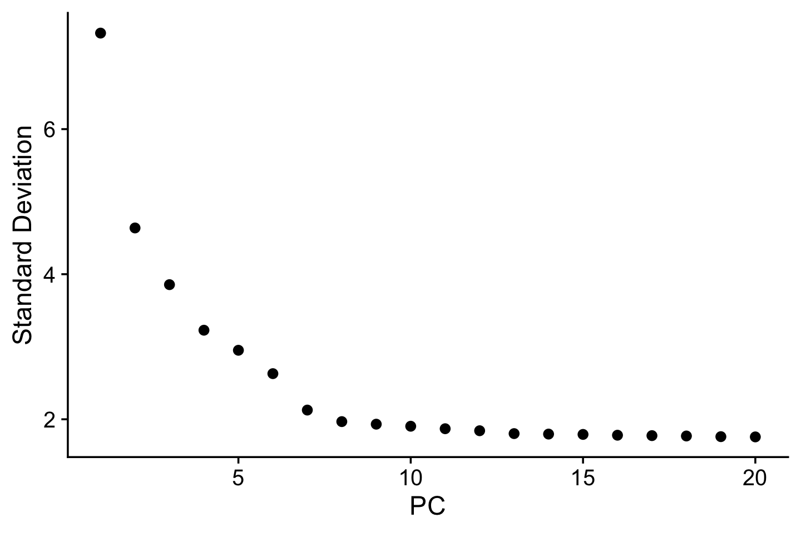
Choosing the optimal number of dimensions to use for downstream analyses can be challenging. If you are uncertain, it is better no include more PCs beyond the elbow, e.g 12-15. Cutting out the PCs, that don’t contribute to explaining more variance, reduces the technical noise and can improve clustering. However, if your dataset contains rare cell type, that you wish to identify, you might need to include more dimensions, as rare cell types are often correlated with later PCs and might be barely distinguishable from the noise. Depending on what you try to discover, you may need to repeat downstream analyses with different number of PCs. In this tutorial we will use the first 10 PCs for downstream analyses.
Clustering
The goal of clustering is to group cells with similar expression profiles, with the hope that each group corresponds to a cell type or state. Clustering is unsupervised: we don’t tell the algorithm which cell types exist, we only look for structure in the data.
Conceptually, Seurat does it in two steps:
- Build a graph of similar cells. Each cell is connected to its nearest neighbors in PCA space (
FindNeighbors()). Cells of the same type are close to each other, so they end up densely connected. - Find communities in the graph. An algorithm (Louvain by default, in
FindClusters()) searches for groups of cells that are more connected to each other than to the rest. Each group is a cluster.
The step is based on the PCs, not on all genes, so the number of PCs we selected earlier affects the clusters.
The most important parameter is the resolution: a higher value gives more, smaller clusters, and a lower value gives fewer, larger clusters. There is no single correct value. Clusters are a way of splitting a continuous landscape of cells, and the right level of detail depends on your question. Common values are 0.4-1.2, and a good practice is to try a few and check whether the clusters make biological sense (do they have distinct marker genes?). Clusters that are not distinguishable by marker genes are probably over-split and can be merged.
Keep in mind that clusters are not the same as cell types. They become cell types only after we annotate them using marker genes and prior knowledge. Also, the cluster numbers are arbitrary labels, and they can change if you rerun the analysis with different parameters.
The default clustering method is Louvain, but we will use Leiden, as it slightly improves Louvain. In practice, on simple datasets like pbmc, these two clustering methods yield very similar results.
pbmc <- FindNeighbors(pbmc, dims = 1:10) # here we use the number of PCs we wish to keepComputing nearest neighbor graphComputing SNNpbmc <- FindClusters(pbmc,
resolution = c(0.2, 0.5, 0.8, 1, 1.2), # we will try multiple resolutions
algorithm = 4) # 4 = Leiden algorithmpbmcAn object of class Seurat
11139 features across 2596 samples within 1 assay
Active assay: RNA (11139 features, 2000 variable features)
3 layers present: counts, data, scale.data
1 dimensional reduction calculated: pca# Nearest neighbors info is stored here
pbmc@graphs$RNA_nn
A Graph object containing 2596 cells
$RNA_snn
A Graph object containing 2596 cellsAfter running FindClusters(), there is a new column for each clustering resolution.
RNA_snn_res.0.2, RNA_snn_res.0.5, RNA_snn_res.0.8, RNA_snn_res.1, RNA_snn_res.1.2 and seurat_clusters which represents the last resolution that was run (1.2). I really don’t like these names. They are ugly and annoying to type. Fortunately, you can specify cluster names when running FindClusters() (or you can change column names).
resolutions <- c(0.2, 0.5, 0.8, 1, 1.2)
cl_names <- paste0("leiden_", resolutions)
pbmc <- FindClusters(pbmc,
resolution = c(0.2, 0.5, 0.8, 1, 1.2), # we will try multiple resolutions
cluster.name = cl_names,
algorithm = 4) # 4 = Leiden algorithmhead(pbmc[[]]) orig.ident nCount_RNA nFeature_RNA percent.mt QC_pass
AAACATACAACCAC-1 pbmc 2418 778 3.0190240 TRUE
AAACATTGAGCTAC-1 pbmc 4896 1346 3.7990196 TRUE
AAACATTGATCAGC-1 pbmc 3144 1126 0.8905852 TRUE
AAACCGTGCTTCCG-1 pbmc 2632 953 1.7477204 TRUE
AAACCGTGTATGCG-1 pbmc 979 520 1.2257406 TRUE
AAACGCACTGGTAC-1 pbmc 2154 779 1.6713092 TRUE
S.Score G2M.Score Phase RNA_snn_res.0.2
AAACATACAACCAC-1 0.126378094 0.004296747 S 1
AAACATTGAGCTAC-1 -0.041807639 -0.020370781 G1 4
AAACATTGATCAGC-1 -0.006384025 0.148882946 G2M 1
AAACCGTGCTTCCG-1 0.065038916 0.060157023 S 2
AAACCGTGTATGCG-1 -0.033472393 0.130470112 G2M 3
AAACGCACTGGTAC-1 -0.049528734 -0.074631316 G1 1
RNA_snn_res.0.5 RNA_snn_res.0.8 RNA_snn_res.1 RNA_snn_res.1.2
AAACATACAACCAC-1 2 2 2 1
AAACATTGAGCTAC-1 4 5 5 4
AAACATTGATCAGC-1 2 2 2 1
AAACCGTGCTTCCG-1 3 3 3 8
AAACCGTGTATGCG-1 7 7 7 9
AAACGCACTGGTAC-1 2 2 2 1
seurat_clusters
AAACATACAACCAC-1 1
AAACATTGAGCTAC-1 4
AAACATTGATCAGC-1 1
AAACCGTGCTTCCG-1 8
AAACCGTGTATGCG-1 9
AAACGCACTGGTAC-1 1resolutions <- c(0.2, 0.5, 0.8, 1, 1.2)
cl_names <- paste0("leiden_", resolutions)
pbmc <- FindClusters(pbmc,
resolution = c(0.2, 0.5, 0.8, 1, 1.2), # we will try multiple resolutions
cluster.name = cl_names,
algorithm = 4) # 4 = Leiden algorithmI will remove the old cluster columns to avoid confusion. Normally, you would run FindClusters() once and specify cluster.names. I just wanted to show how the function behaves by default.
cols_remove <- grep("RNA_snn*|seurat_clusters", colnames(pbmc[[]]), value = TRUE)
pbmc[[cols_remove]] <- NULLhead(pbmc[[]]) orig.ident nCount_RNA nFeature_RNA percent.mt QC_pass
AAACATACAACCAC-1 pbmc 2418 778 3.0190240 TRUE
AAACATTGAGCTAC-1 pbmc 4896 1346 3.7990196 TRUE
AAACATTGATCAGC-1 pbmc 3144 1126 0.8905852 TRUE
AAACCGTGCTTCCG-1 pbmc 2632 953 1.7477204 TRUE
AAACCGTGTATGCG-1 pbmc 979 520 1.2257406 TRUE
AAACGCACTGGTAC-1 pbmc 2154 779 1.6713092 TRUE
S.Score G2M.Score Phase leiden_0.2 leiden_0.5
AAACATACAACCAC-1 0.126378094 0.004296747 S 1 2
AAACATTGAGCTAC-1 -0.041807639 -0.020370781 G1 4 4
AAACATTGATCAGC-1 -0.006384025 0.148882946 G2M 1 2
AAACCGTGCTTCCG-1 0.065038916 0.060157023 S 2 3
AAACCGTGTATGCG-1 -0.033472393 0.130470112 G2M 3 7
AAACGCACTGGTAC-1 -0.049528734 -0.074631316 G1 1 2
leiden_0.8 leiden_1 leiden_1.2
AAACATACAACCAC-1 2 2 1
AAACATTGAGCTAC-1 5 5 4
AAACATTGATCAGC-1 2 2 1
AAACCGTGCTTCCG-1 3 3 8
AAACCGTGTATGCG-1 7 7 9
AAACGCACTGGTAC-1 2 2 1Non-linear dimensional reduction - UMAP
Why not stop at PCA? PCA is linear, and the first two PCs capture only a small part of the variation in single-cell data. Plotting PC1 vs PC2 usually shows overlapping populations, even if the cells are well separated in the 10-30 PCs we use for clustering. Non-linear methods (UMAP, t-SNE) compress this high-dimensional structure into 2 dimensions, so that we can see the clusters. They are used to visualize the data, and the clustering is not done on them.
Comparison with DESeq2: in a DESeq2 workflow, the first two PCs are usually enough to see the few samples, so there is no need for a non-linear method. With thousands of cells, PC1 vs PC2 is not enough.
UMAP vs t-SNE
- Both place similar cells close together in 2D.
- UMAP is faster, and it preserves more of the global structure (the relationships between clusters) than t-SNE, which mostly preserves local neighborhoods.
- This is why UMAP is preferred, and it is the standard now.
Limitations: how not to overinterpret UMAP
- Distances are only meaningful locally. The distance between clusters and the size or density of clusters on the plot do not reflect the real distances or the number of cells.
- Clusters that are close on the UMAP are not necessarily more similar, and the global layout can change between runs and parameters.
- Continuous trajectories and gaps can be artifacts, as the method may tear or stretch the data.
- The shape depends on parameters (e.g. the number of PCs and neighbors) and on the random seed.
- Use UMAP for visualization and to check the clusters, not as evidence on its own. Confirm conclusions with marker genes and statistical tests on the full data.
pbmc <- RunUMAP(pbmc, dims = 1:10)12:46:41 UMAP embedding parameters a = 0.9922 b = 1.11212:46:41 Read 2596 rows and found 10 numeric columns12:46:41 Using Annoy for neighbor search, n_neighbors = 3012:46:41 Building Annoy index with metric = cosine, n_trees = 500% 10 20 30 40 50 60 70 80 90 100%[----|----|----|----|----|----|----|----|----|----|**************************************************|
12:46:42 Writing NN index file to temp file /var/folders/d2/thd06qrn4rbb45ympp7409t40000gn/T//RtmpprC29d/file1686c3ec206d
12:46:42 Searching Annoy index using 1 thread, search_k = 3000
12:46:42 Annoy recall = 100%
12:46:42 Commencing smooth kNN distance calibration using 1 thread with target n_neighbors = 30
12:46:42 Initializing from normalized Laplacian + noise (using RSpectra)
12:46:42 Commencing optimization for 500 epochs, with 103478 positive edges
12:46:42 Using rng type: pcg
12:46:44 Optimization finishedpbmcAn object of class Seurat
11139 features across 2596 samples within 1 assay
Active assay: RNA (11139 features, 2000 variable features)
3 layers present: counts, data, scale.data
2 dimensional reductions calculated: pca, umapUMAP appeared in the dimensional reduction next to PCA
We can save the seurat object, so we don’t have to rerun everything again when we close R.
saveRDS(pbmc, file = "data/pbmc_seurat.rds")UMAP plots
The UMAP is a map of the cells, and we can color it by different information to learn about the data. This is one of the most common type of plot in single-cell world. Seurat has two main functions:
DimPlot()colors cells by a categorical variable from the metadata, e.g. clusters, sample, condition orQC_pass.FeaturePlot()colors cells by a continuous value: the expression of a gene, or a numeric metadata column such asnCount_RNAorpercent.mt.
DimPlot(pbmc, reduction = "umap", label = TRUE)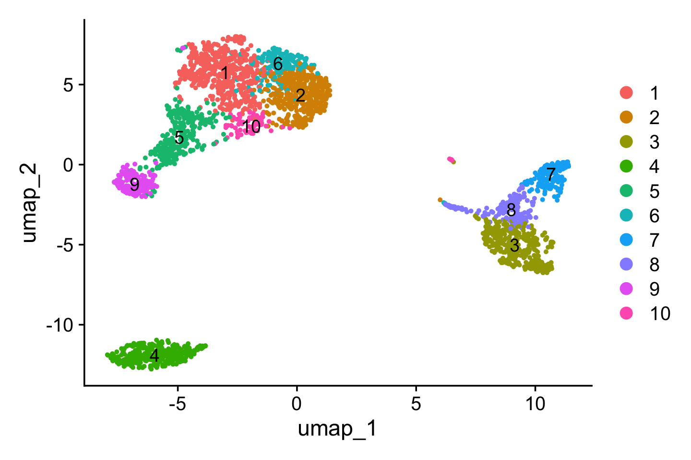
levels(Idents(pbmc)) [1] "1" "2" "3" "4" "5" "6" "7" "8" "9" "10"By default DimPlot groups cells by their Identity, which in this case is the last resolution that we ran
Useful arguments:
group.by: which metadata column defines the colors (default is the active identity, i.e. the clusters).split.by: make a separate panel for each value (e.g. per sample or condition).label = TRUE: write the cluster names on the plot.cells.highlight: highlight a chosen set of cells.order = TRUEinFeaturePlot(): plot the cells with the highest expression on top, so they are not hidden.
What to look for:
- Clusters: do they look like separate groups?
- Technical effects: color by QC metrics (
nCount_RNA,percent.mt), the cell cycle phase and batch. A cluster that is defined only by a high mitochondrial percentage or by one batch may be an artifact. - Marker genes: color by known markers to see which cells express them.
Remember that the UMAP is only for visualization, so keep the limitations from the previous section in mind.
DimPlot(pbmc, group.by = cl_names)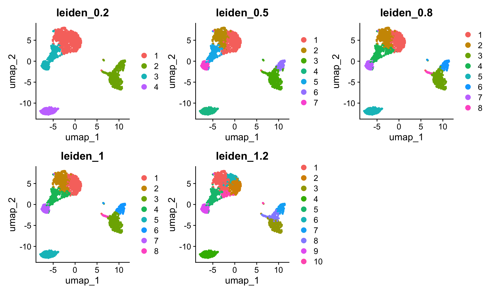
Passing several columns to group.by gives one panel per clustering resolution on the same UMAP. Higher resolutions split the same cells into more, smaller clusters, so this helps you pick a resolution that separates real groups without over-splitting them. The cluster numbering starts with 1 (or 0 if Louvain) and that is the biggest cluster. The last number will represent the smallest cluster.
# Is a cluster driven by a technical problem?
FeaturePlot(pbmc, features = c("nCount_RNA", 'nFeature_RNA',"percent.mt", 'S.Score', 'G2M.Score'), order = TRUE) +
DimPlot(pbmc, group.by = "Phase")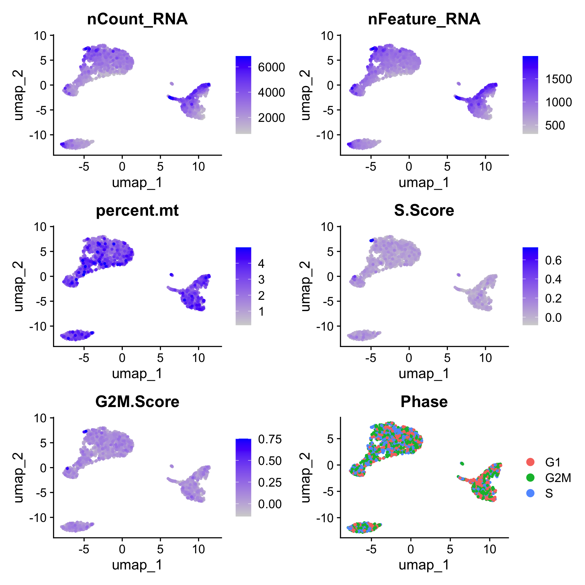
FeaturePlot(pbmc, features = c("IL7R", "MS4A1", "PPBP", "GNLY"), order = TRUE)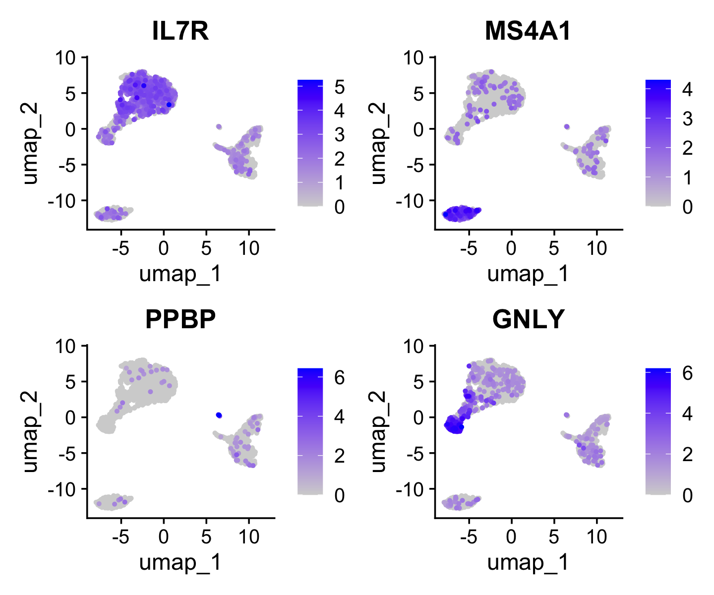
Exercise
We mentioned earlier that sometimes there might be a strong effect, that drives the clustering that is not the cell type. In that case, we might want to regress that feature. Based on the above plots, is there any technical/ non-cell-type-derived factor that defines a cluster? Or is the clustering driven by marker genes?
Choosing optimal clustering resolution
This is one of the most important problems in single cell analysis, because the clustering resolution you choose will determine lots of downstream analyses. There is no single correct resolution. Clusters are a mathematical representation of the data, and the “right” number depends on the question you ask: a lower resolution for broad cell types (T cells, B cells, monocytes), a higher one to resolve subtypes (CD4 vs CD8 T cells). It is common to start coarse and sub-cluster only the populations of interest.
Considerations
- Biological question: how fine do you need to go? Do not split further than your question requires.
- Data size and complexity: larger datasets with more cell types usually support higher resolutions.
- Over-clustering: splits with no distinguishing genes, or clusters defined only by QC metrics, cell cycle or batch, are not worth keeping.
- Under-clustering: distinct populations (e.g. a clear marker-defined group) that are merged into one cluster.
- Reproducibility: the clustering depends on the number of PCs, the number of neighbors and the random seed, so check that your conclusions hold when these change slightly.
Techniques
- Visual inspection: color the UMAP by several resolutions (
DimPlot(pbmc, group.by = cl_names)). - Clustering tree: the
clustreepackage shows how cells from each cluster split when the resolution increases. Prefer a resolution where clusters have a single parent. Many crossing arrows mean an unstable clustering. - Marker genes: run
FindAllMarkers()and check whether neighboring clusters have distinct markers. If two clusters have no clear markers separating them, merge them by choosing a lower resolution. - Silhouette score: measures how well each cell fits its own cluster compared with the nearest other cluster (see
cluster::silhouette()on the PCA embedding). Higher is better, but it favors a small number of clusters, so use it as a guide. - Stability (bootstrapping): re-cluster on subsets of cells or with different seeds and measure how often the same cells end up together (e.g. the
scclustevalorchooseRapproaches). Stable clusters are more trustworthy.
Clustering tree
Let’s inspect the clustering tree
clustree(pbmc, prefix = "leiden_")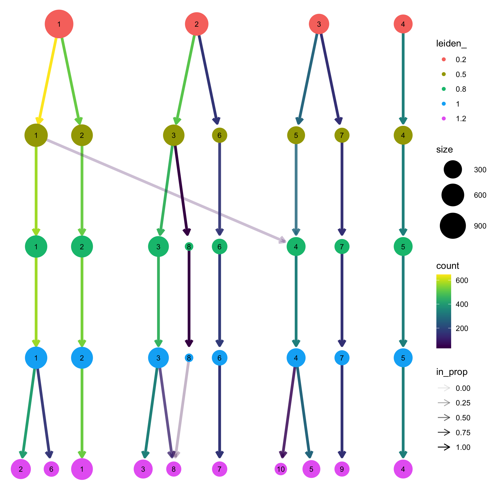
Each row is one resolution (top to bottom: 0.2, 0.5, 0.8, 1.0, 1.2). Node size is the number of cells in a cluster, and arrows go from a cluster at one resolution to the clusters its cells land in at the next.
0.2 → 0.5 is where most of the structure appears. Four clusters become seven. Clusters 1, 2 and 3 each split in two, and cluster 4 passes through unchanged. All of these are clean splits, with each child coming from a single parent.
0.5 → 0.8 Almost everything is one-to-one
0.8 → 1.0 Nothing new. Everything is one-to-one
1.0 –> 1.2 Splits three clusters
Find marker genes
The clustering tree tells us which clusters split, but not whether a split is biologically meaningful. For that, we can ask whether the clusters are different enough to have their own marker genes. FindAllMarkers() compares each cluster to all other cells and returns the genes that are higher in that cluster. We will run FindAllMarkers for each resolution, extract top 10 marker genes/cluster and plot heatmaps of their expression
heatmaps_top10_markers <- list()
for (res in cl_names){
markers <- FindAllMarkers(pbmc, group.by = res ,only.pos = TRUE, min.pct = 0.25, logfc.threshold = 0.25)
top10 <- markers %>%
filter(p_val_adj < 0.05) %>%
group_by(cluster) %>%
slice_max(avg_log2FC, n=10) %>%
pull(gene) %>%
unique()
heatmaps_top10_markers[[res]] <- DoHeatmap(pbmc, features = top10, group.by = res, size=3) + ggtitle(res)
}Calculating marker statistics for 4 clusters using presto Calculating fold changes Running presto::wilcoxaucWarning in DoHeatmap(pbmc, features = top10, group.by = res, size = 3): The
following features were omitted as they were not found in the scale.data layer
for the RNA assay: HLA-DOB, PKIG, TSPAN13, FCER2, KLRD1, CD33, TCF7, PIK3IP1,
FLT3LG, TRAT1, CCR7, PRKCQ-AS1, LEF1Calculating marker statistics for 7 clusters using presto Calculating fold changes Running presto::wilcoxaucWarning in DoHeatmap(pbmc, features = top10, group.by = res, size = 3): The
following features were omitted as they were not found in the scale.data layer
for the RNA assay: KLRF1, SH2D1B, BATF3, MS4A4A, HES4, MATK, CD8A, HLA-DOB,
PKIG, TSPAN13, FCER2, SUSD3, TTC39C, SPOCK2, TRAT1, CD40LG, CD3D, LDHB, TCF7,
FLT3LG, PIK3IP1, PRKCQ-AS1, LEF1, CCR7Calculating marker statistics for 8 clusters using presto Calculating fold changes Running presto::wilcoxaucWarning in DoHeatmap(pbmc, features = top10, group.by = res, size = 3): The
following features were omitted as they were not found in the scale.data layer
for the RNA assay: LGMN, KLRF1, SH2D1B, MS4A4A, BATF3, HES4, HLA-DOB, PKIG,
TSPAN13, FCER2, CD8A, SUSD3, SPOCK2, TRAT1, CD40LG, TCF7, AAK1, FLT3LG,
PIK3IP1, PRKCQ-AS1, LEF1, CCR7Calculating marker statistics for 8 clusters using presto Calculating fold changes Running presto::wilcoxaucWarning in DoHeatmap(pbmc, features = top10, group.by = res, size = 3): The
following features were omitted as they were not found in the scale.data layer
for the RNA assay: LGMN, KLRF1, SH2D1B, MS4A4A, BATF3, HES4, HLA-DOB, PKIG,
TSPAN13, FCER2, CD8A, SUSD3, SPOCK2, TRAT1, CD40LG, TCF7, AAK1, FLT3LG,
PIK3IP1, PRKCQ-AS1, LEF1, CCR7Calculating marker statistics for 10 clusters using presto Calculating fold changes Running presto::wilcoxaucWarning in DoHeatmap(pbmc, features = top10, group.by = res, size = 3): The
following features were omitted as they were not found in the scale.data layer
for the RNA assay: RPS3, KLRF1, SH2D1B, LILRB4, CD300C, CPVL, MS4A4A, HES4,
BATF3, CD7, LDHB, TCF7, OXNAD1, MATK, CD8A, HLA-DOB, PKIG, TSPAN13, FCER2,
CSF3R, BST1, C12orf57, FLT3LG, PIK3IP1, AAK1, PRKCQ-AS1, LEF1, CCR7, SUSD3,
SPOCK2, TRAT1, CD40LGheatmaps_top10_markers$leiden_0.2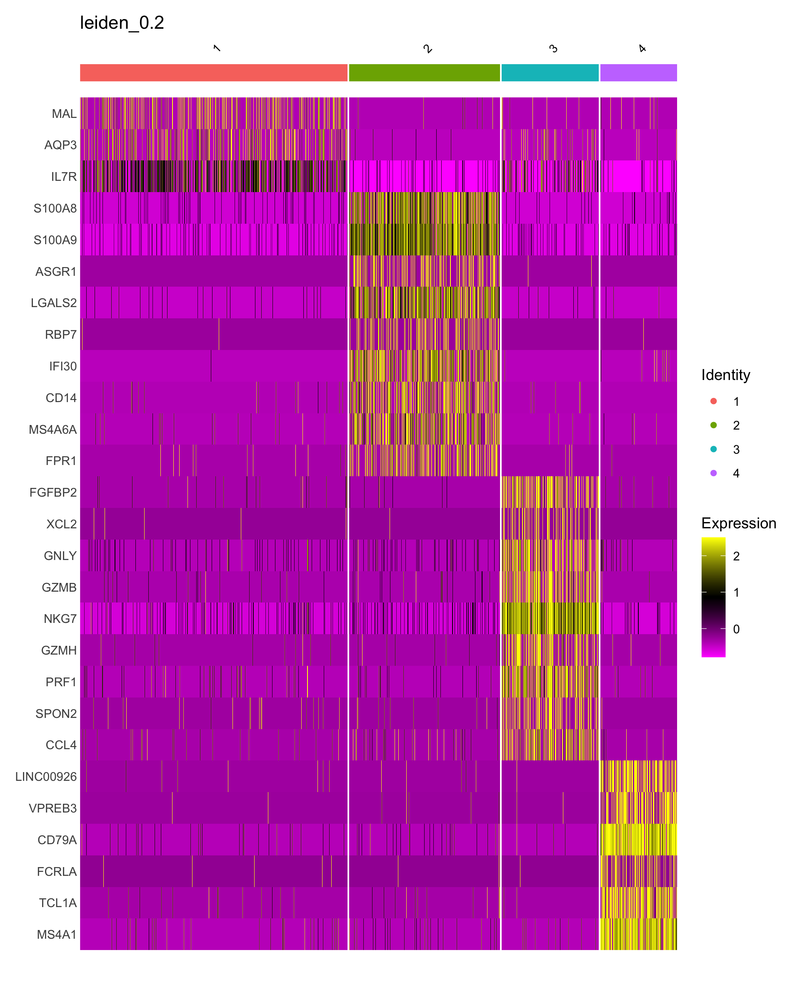
$leiden_0.5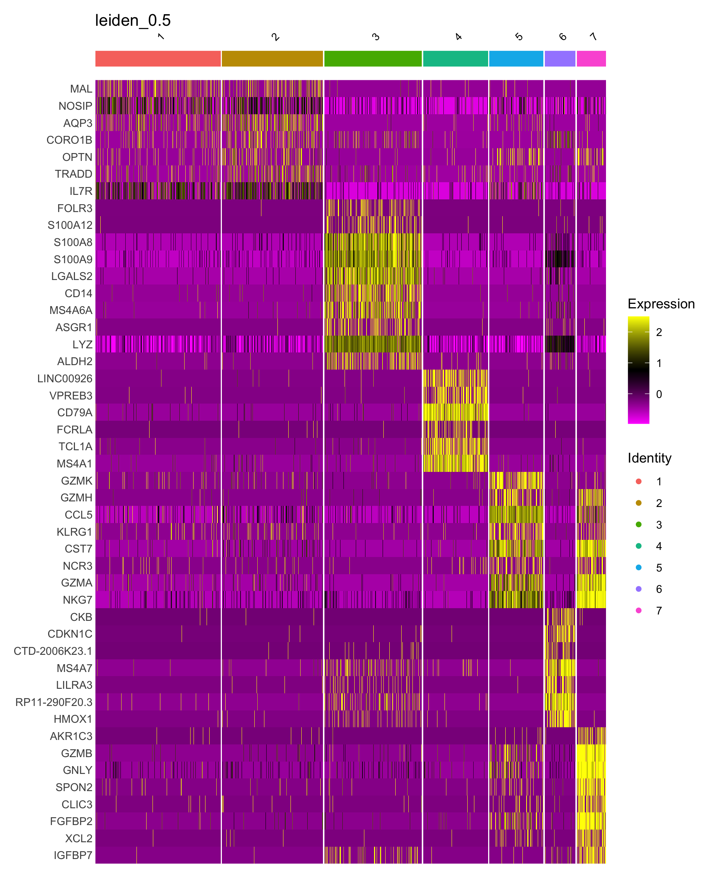
$leiden_0.8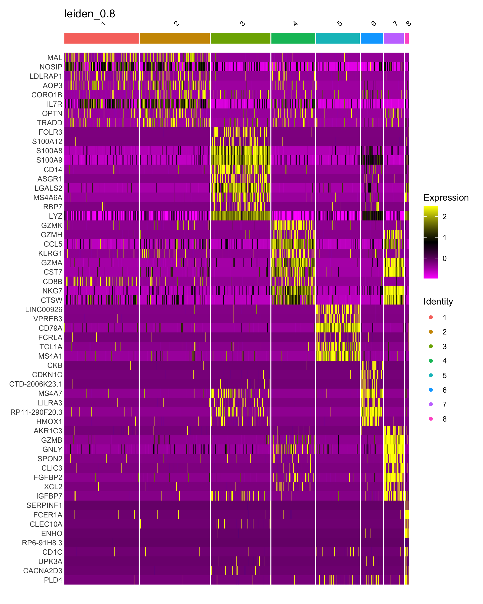
$leiden_1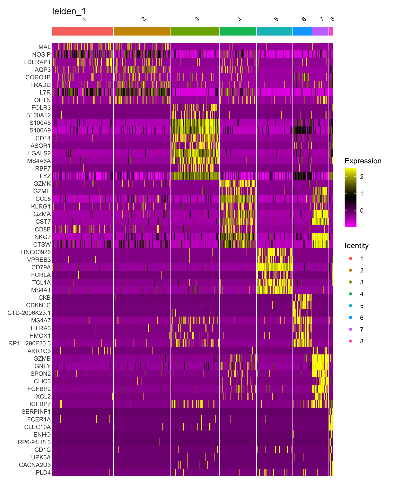
$leiden_1.2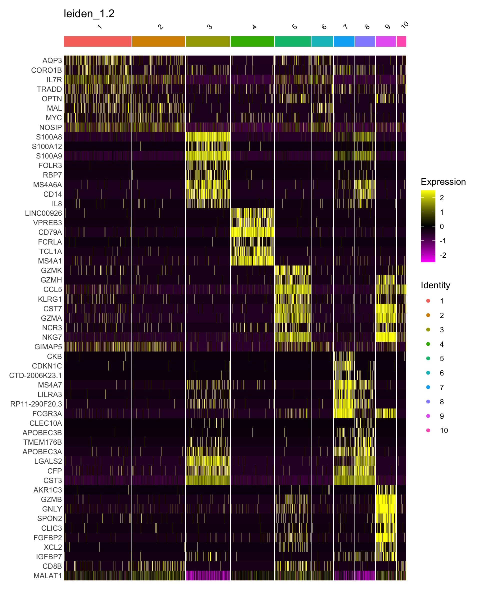
What we are looking for:
Clean block-diagonal pattern: each cluster lights up its own gene block, with little signal in other clusters.
Specific, interpretable markers: canonical lineage genes (e.g. CD79A, S100A8, NKG7), not just a ranked list.
New clusters that add a new block: a resolution step is worth it if the extra cluster has its own markers (e.g. DCs at 0.8).
Persistence: splits that hold across several resolutions (confirm with clustree).
Overclustering:
A new cluster’s genes are a subset of its sibling’s, or the same genes shared with its neighbors, just graded.
Top markers are MALAT1, ribosomal (RPS/RPL), mitochondrial or stress genes: a QC or state artifact, not a cell type.
Blurry diagonal, with blocks that bleed into neighbors.
Tiny clusters with no markers, or whose markers are low-expression and sparse.
Rule of thumb
Resolution heavy depends on what you are trying to find. If you only care about main lineages (for example T cells, B cells) because later on you will focus on only one, it’s completely fine to use small resolutions. If you want to identify subtypes of e.g. T cells, you need to increase the resolution. If you want to identify rare cell types you might even want to slightly overcluster and merge similar clusters later.
In my opinion, if you’re not sure it is better to slightly overcluster than undercluster.
Leiden 0.2: When we look at the clustering tree, we see that 0.2 –> 0.5 cleanly splits almost each cluster in 2. This suggests that at this resolution, clusters are a mix of different cell types. When we inspect the actual marker genes, we can see that it is a mixture of two lineages - T cells and NK (T: GZMK, CD8A, CCL5, KLRG1 and NK: GNLY, SPON2, FGFBP2, XCL2) (I goggled these genes and what cell type they might represent).
Leiden 0.5: We see a diagnonal on the heatmap. Some clusters look very similar and could represent the same cell type or a different subtypes of the same cell type. The tree shows that when we go 0.5 –> 0.8 the mapping is almost one-to-one with some exceptions. Technically we could stop here but…
Leiden 0.8: The tree shows 0.8 is mostly one-to-one with a few exceptions. The heatmaps look very similar. But take a look at this small cluster 8 that emerged from cluster 3 from 0.5 split. It is small but it seems to have distinct marker genes. A quick lookup of these genes shows that cluster 8 may represent dendritic cells.
Leiden 1.2: The heatmap starts looking messy without a clear diagonal of yellow blocks. The new clusters don’t seem to be specific. 1.2 cluster 8 is a mixture: it inherits the DCs plus a slice of monocytes, so its markers are muddled. At 0.8 the DCs were cleaner (that is also shown in the tree). This says that the clusters became unstable. Cluster 10 expresses markers like MALAT1, RPS3 and CD8B. A cluster whose top markers are MALAT1 and a ribosomal gene is usually separated by RNA quality or ribosomal content, not by cell type.
I think it is reasonable to choose leiden 0.8 as our clustering resolution. In my opinion, it represents clean cell types, including smaller population of DC without making the rest of the clusters unstable or loosing specificity.
Idents(pbmc) <- "leiden_0.8"
DimPlot(pbmc, label = T)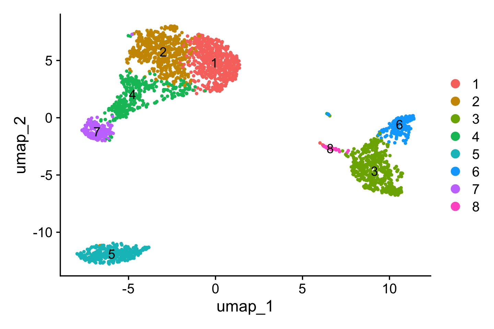
Cell type annotation
Clusters are only numbers. Annotation means assigning a cell type or state to each cluster, so that we can interpret the results biologically. Annotation depends on the resolution we chose, so it should come after we have settled on one. It is one of the most important steps in single-cell analysis. Correct annotation allows for discovery of new biology and dictates all post-hoc analyses. Incorrect cell type annotation might lead to wrong or misleading conclusions.
There are many ways to annotate clusters. The most common approaches are:
- Manual, marker-based: compare the top markers of each cluster (from
FindAllMarkers()) with known cell type markers from the literature or from databases such as PanglaoDB and CellMarker. This is what we did informally above (e.g. GNLY for NK cells, and so on). - Manual, canonical marker-based. Sometimes there are well known marker genes for certain cell types that didn’t show up as top markers using marker detection. Sometimes depending on sequencing depth and other technical variables, canonical marker genes might not be detected at sufficient levels.
- Automated, reference-based: transfer labels from an already annotated dataset, using tools such as
SingleR,AzimuthorCellTypist. It is faster and more reproducible, but it can only label cell types that are present in the reference, and the labels depend on the quality of that reference.
In practice, we use a combination of all these approaches, depending on the data, our prior expertise. Intersecting multiple methods gives us a higher confidence that our cluster represent true cell types.
Things to keep in mind:
- Use several markers per cell type. A single gene can be expressed in more than one cell type.
- Clusters can be mixed. If a cluster contains two lineages, consider a higher resolution or sub-clustering it.
- Clusters can be technical. A cluster without a clear cell type, with low-quality markers (e.g.
MALAT1, ribosomal genes) or high mitochondrial content, may be a QC artifact and not a real population. - Labels are hypotheses. Annotations should be revisited when we learn more.
Exercise 2
This is a pbmc dataset, so we know what cell types to expect in this experiment. Find out what these cell types are and what their canonical marker genes are. Use google, publications and public databases (CellMarker 2, PanglaoDB, CellGuide). Use
FeaturePlot()to confirm that the markers you found are detected and can represent a cell type. Make a table:
Cell type Proportion Canonical markers Cluster(s)
Exercise 3
Take a look at the heatmap of top marker genes. For each cluster, look up its top marker genes. What cell type can marker each represent? This is a reverse search of the previous exercise. You can utilize the same databases. Remember that some markers are more specific than others. If you are not sure, list more than one cell type. Make a table
Cluster Markers Cell type(s) 1 2 3 4 5 6 7 8
Exercise 4
Cross-reference the two approaches and see if both ways of annotations overlap or there are discrepancies.
Assign a cell type to each cluster.
labels <- c(
"1" = "",
"2" = "",
"3" = "",
"4" = "",
"5" = "",
"6" = "",
"7" = "",
"8" = ""
)
pbmc <- RenameIdents(pbmc, labels)
pbmc$celltype <- Idents(pbmc) # save it, since Idents are easily overwrittenExercise 5
As a sanity check run
FindAllMarkerson the new Idents and make sure that the results are correct. Prepare a figure showing:
- UMAP grouped by celltype with each cluster labeled.
- A plot showing proportion of each cell type (e.g. stacked barplot)
- FeaturePlot with one canonical marker gene per cell type
- DotPlot or heatmap with top 5 marker genes per cell type
Example answer
| Cell type | Typical proportion (of PBMC) | Canonical markers | Cluster(s) |
|---|---|---|---|
| Naive CD4+ T | ~15-30% | CCR7, SELL, TCF7, LEF1, IL7R (low) | 1 and 2? |
| Memory CD4+ T | ~15-25% | IL7R, S100A4, CD40LG, AQP3 | 2? |
| CD8+ T (effector/memory) | ~5-15% | CD8A, CD8B, GZMK, CCL5, GZMH | 4 |
| NK | ~5-15% | GNLY, NKG7, KLRF1, FGFBP2, SPON2 | 7 |
| B | ~5-15% | MS4A1, CD79A, CD79B, TCL1A | 5 |
| CD14+ mono | ~10-25% | CD14, LYZ, S100A8, S100A9, FCN1 | 3 |
| CD16+ mono | ~2-8% | FCGR3A, MS4A7, LST1, CDKN1C | 6? |
| Dendritic cells | ~1-2% | FCER1A, CD1C, CLEC10A, CST3 (pDC: LILRA4, IL3RA) | 8 |
| Platelets/megakaryocytes | <1-2% (variable) | PPBP, PF4, GNG11 | none detected |
markers <- list(
"Naive CD4 T" = c("CCR7", "SELL", "TCF7", "LEF1"),
"Memory CD4 T" = c("IL7R", "S100A4", "CD40LG", "AQP3"),
"CD8 T" = c("CD8A", "CD8B", "GZMK", "CCL5", "GZMH"),
"NK" = c("GNLY", "NKG7", "KLRF1", "FGFBP2", "SPON2"),
"B" = c("MS4A1", "CD79A", "CD79B", "TCL1A"),
"CD14 Mono" = c("CD14", "LYZ", "S100A8", "S100A9", "FCN1"),
"CD16 Mono" = c("FCGR3A", "MS4A7", "LST1", "CDKN1C"),
"DC" = c("FCER1A", "CD1C", "CLEC10A", "CST3"),
"pDC" = c("LILRA4", "IL3RA", "TCF4"),
"Platelet" = c("PPBP", "PF4", "GNG11"),
"Pan-T" = c("CD3D", "CD3E")
)DotPlot(pbmc,
features = markers,
group.by = "leiden_0.8", # or "celltype" once annotated
cols = c("lightgrey", "firebrick"),
dot.scale = 6) +
RotatedAxis() +
theme(strip.text.x = element_text(angle = 45, hjust = 0, size = 8),
panel.spacing = unit(0.15, "lines"),
axis.text.x = element_text(size = 7)) +
labs(x = NULL, y = "Cluster (res 0.8)")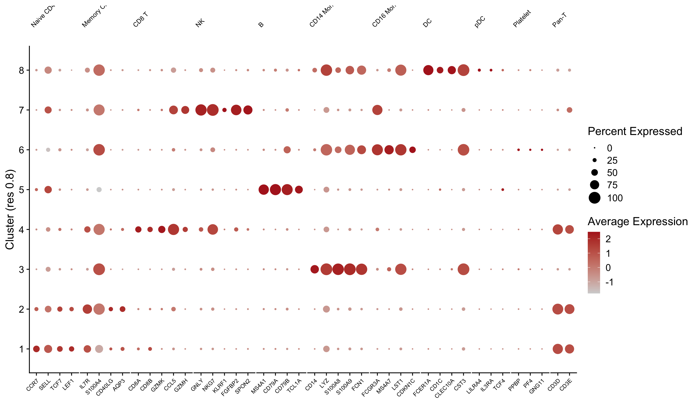
FeaturePlot(pbmc, c('IL7R', 'CCR7', 'CD14', 'LYZ', 'IL7R', 'S100A4', 'MS4A1', 'CD8A', 'FCGR3A', 'MS4A7', 'GNLY', 'NKG7', 'FCER1A', 'CST3', 'PPBP'), order = T, label = T)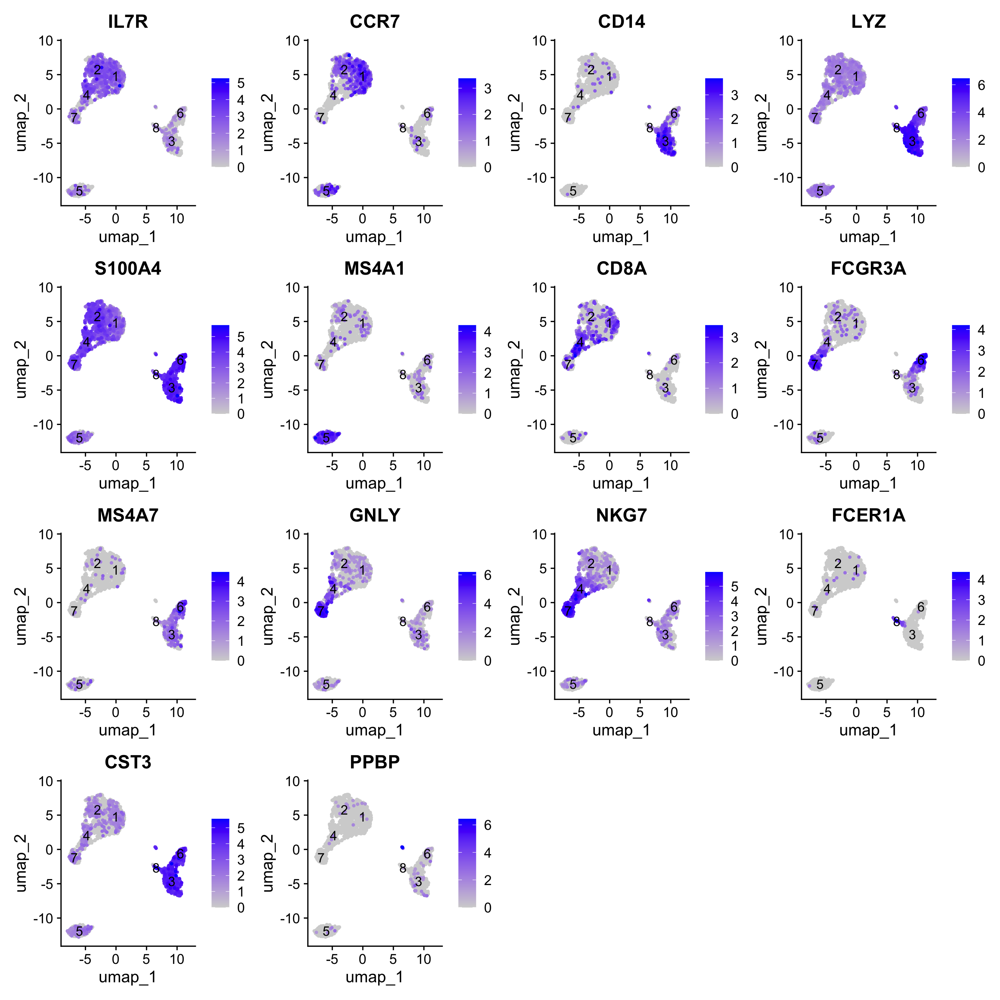
labels <- c(
"1" = "Naive CD4+ T",
"2" = "Memory CD4+ T",
"3" = "CD14+ monocytes",
"4" = "CD8+ T",
"5" = "B cells",
"6" = "CD16+ monocytes",
"7" = "NK",
"8" = "DC"
)
pbmc <- RenameIdents(pbmc, labels)
pbmc$celltype <- Idents(pbmc) # save it, since Idents are easily overwrittenDimPlot(pbmc, label = T)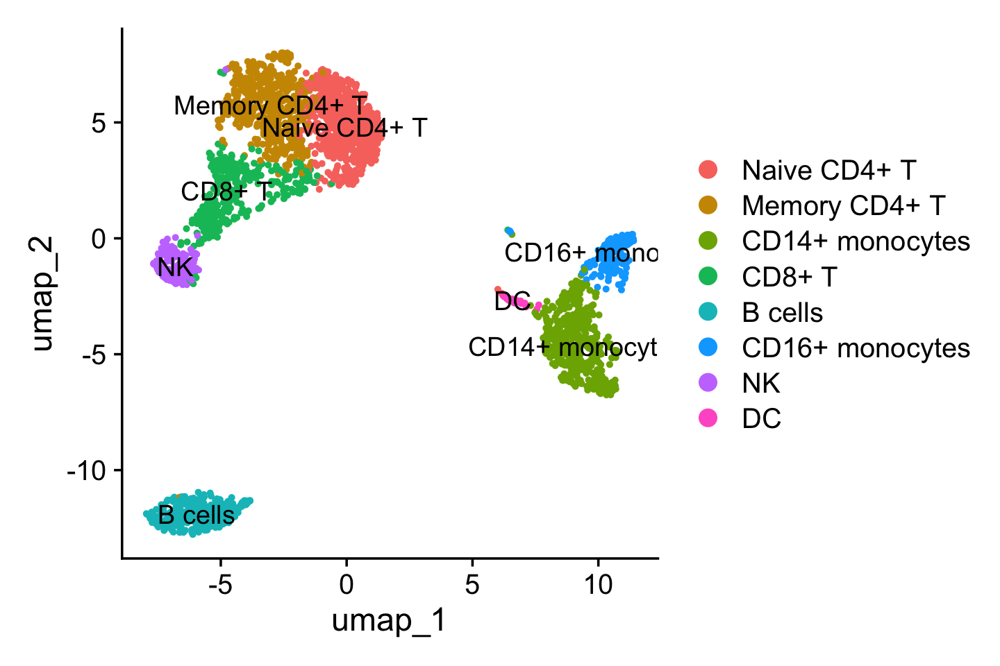
saveRDS(pbmc, 'data/pbmc_seurat.rds')